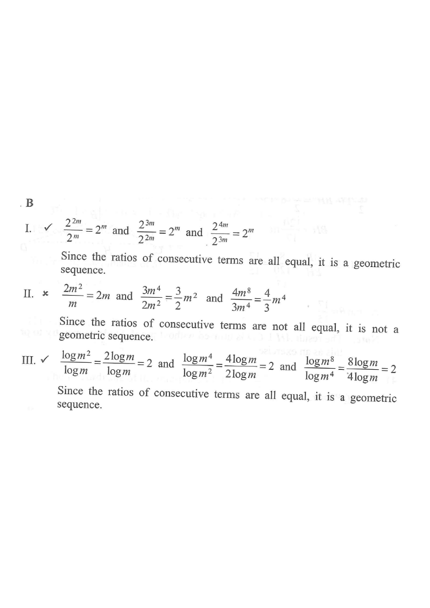

Ratio test on the three candidate sequences (scroll the steps).
Step 1 — the three candidate sequences.
HKDSE 2014 Paper 2 · Q37
If $m>1$, which of the following are geometric sequences?
$2^{m},\;2^{2m},\;2^{3m},\;2^{4m}$
$m,\;2m^{2},\;3m^{4},\;4m^{8}$
$\log m,\;\log m^{2},\;\log m^{4},\;\log m^{8}$
A. I and II only
B. I and III only
C. II and III only
D. I, II and III

Figure (original exam diagram)
STEP 1
Common Ratio of a Geometric Sequence\(r=\dfrac{t_{n+1}}{t_{n}} \text{ is constant}\)Each option is tested by forming \(t_{2}/t_{1}\), \(t_{3}/t_{2}\) and \(t_{4}/t_{3}\) and comparing them.
Recall the test. A sequence is geometric if the ratio of every pair of consecutive terms is the same constant:
Hint: Always form the ratio of consecutive terms — do not just look at the exponents or coefficients.
STEP 2 — Option I
Quotient Law of Indices\(\dfrac{a^{m}}{a^{n}}=a^{m-n}\)\(\dfrac{2^{2m}}{2^{m}}=2^{m}\), and the other two ratios are also \(2^{m}\), so option I is geometric.
The ratios $2m,\;\tfrac{3}{2}m^{2},\;\tfrac{4}{3}m^{4}$ are not all equal (the coefficients $\frac{2}{1},\frac{3}{2},\frac{4}{3}$ differ and the powers of $m$ differ).
$\Rightarrow$ Option II is NOT geometric.
Hint: Just find two different consecutive ratios — that is already enough to disprove it.
STEP 4 — Option III
Power Law of Logarithms\(\log m^{k}=k\log m\)It turns \(\log m^{2}\), \(\log m^{4}\), \(\log m^{8}\) into \(2\log m\), \(4\log m\), \(8\log m\), giving equal ratios \(2\).
$\Rightarrow$ Option III IS geometric (common ratio $2$).
Hint: $\log m\ne 0$ because $m>1$, so cancelling $\log m$ is valid.
STEP 5 — Conclusion
Only I and III are geometric sequences.
Sequence
Ratios $t_2/t_1,\;t_3/t_2,\;t_4/t_3$
Geometric?
I
$2^{m},\;2^{m},\;2^{m}$
Yes
II
$2m,\;\tfrac{3}{2}m^{2},\;\tfrac{4}{3}m^{4}$
No
III
$2,\;2,\;2$
Yes
Hint: “I and III only” is choice B.
Answer: B — I and III only
PRACTICESimilar question — try it yourself
Question. If \(n>1\), which of the following are geometric sequences? I. \(5^{n},\ 5^{n+1},\ 5^{n+2},\ 5^{n+3}\) II. \(2,\ 4n,\ 8n^{2},\ 16n^{3}\) III. \(\log n,\ \log n^{2},\ \log n^{3},\ \log n^{4}\) A. I and II only B. I and III only C. II and III only D. I, II and III
Show the worked solution
Step 1. A sequence is geometric when \(\dfrac{t_{2}}{t_{1}}=\dfrac{t_{3}}{t_{2}}=\dfrac{t_{4}}{t_{3}}\), so test the ratios in each option.
Step 2. I: \(\dfrac{5^{n+1}}{5^{n}}=5\) for every pair, so all ratios are \(5\) — geometric with common ratio \(5\).
Step 3. II: \(\dfrac{4n}{2}=\dfrac{8n^{2}}{4n}=\dfrac{16n^{3}}{8n^{2}}=2n\), so it is geometric with common ratio \(2n\).
Step 4. III: since \(\log n^{k}=k\log n\), \(\dfrac{\log n^{2}}{\log n}=2\) but \(\dfrac{\log n^{3}}{\log n^{2}}=\dfrac{3}{2}\) — the ratios differ, so it is not geometric.
Step 5. Only I and II are geometric, so the answer is A.